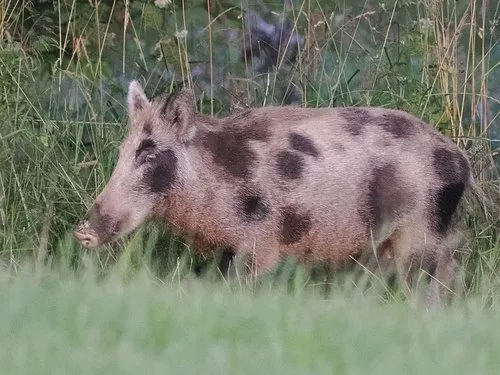

哺乳动物 · 动物界
野猪 Sus scrofa

家猪的野生祖先，体形粗壮、鼻端裸露善拱土，杂食性强，适应森林到农田边缘的多种环境，繁殖力旺盛。
- 分类
- 门脊索动物门纲哺乳纲目偶蹄目科猪科属猪属
- 栖息环境
- 森林、灌丛、草原、农田与沼泽边缘，适应多种环境
- 地理分布
- 欧亚大陆和北非，并被引入美洲、澳大利亚等地
- 保护级别
- IUCN 无危（LC）
物种志
野猪体长 1.0–1.8 米，肩高 0.6–1.1 米，体重 40–200 kg，雄性大于雌性。它的体形粗壮，被毛为黑褐至灰褐色，背部有硬而长的鬃毛；鼻端裸露呈圆盘状，适合拱土；雄猪的上下犬齿发达，向外翘起形成獠牙，幼猪身上有浅色纵纹。
野猪分布于欧亚大陆和北非，并被引入美洲、澳洲等地，栖息于森林、灌丛、草原、农田和沼泽边缘，适应力极强。它是杂食动物，食谱包括植物根茎、果实、坚果、昆虫、蚯蚓、鸟蛋甚至小型兽类，每天用鼻子拱土觅食。野猪多在晨昏和夜间活动，雌猪与幼猪结成群体，雄猪成年后独居；雌兽妊娠期约 115–120 天，每胎 4–12 仔。野猪繁殖力强，在缺乏天敌的地区常造成农作物损失和生态压力。
形态与习性
- 食性植物根茎、果实、坚果、昆虫、蚯蚓与小型兽类
- 体长1.0–1.8 m，肩高 0.6–1.1 m
- 体重40–200 kg，雄性大于雌性
- 寿命野外约 10–12 年
- 繁殖妊娠期约 115–120 天，每胎 4–12 仔
- 獠牙雄猪上下犬齿发达，外翘形成獠牙
- 活动节律晨昏和夜间活动，白天休息
趣味知识
- 野猪是家猪的野生祖先，幼猪身上有条纹状保护色。
- 它用鼻端圆盘状的鼻子拱土，寻找根茎和昆虫。
- 雌猪与幼猪结成群体，成年雄猪则多独居。
- 野猪繁殖力很强，一胎可产 4–12 头幼猪。
生态关系
- 捕食 ← 虎 虎会捕食野猪